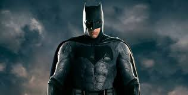

Endereço, e-mail e contatos
Rua Vale do sol 42, Lirio do vale 1 - Manaus, AM – Brasil
Nascimento: 24 de abril de 2002
Mobile/Whatsapp: +55 92 9.9528-0057
Email:cristinageovana859@gmail.com
Nascimento: 24 de abril de 2002
Mobile/Whatsapp: +55 92 9.9528-0057
Email:cristinageovana859@gmail.com
Outras Áreas de Interesse
- Economia e Investimentos.
- Adminstração.
- Cultivo de flores, especiarias, cactos, babosas e suculentas.
- Apaixonada por artes plasticas principalmente a pintura e
pelas artes visuais especialmente a poesia e a fotografia. - Entusiasta do mundo da moda.
- Entusiasta de Culinária.
- Entusiasta da Leitura.
Maior Medo em Vida. Porque tem esse medo?
Eu tenho alguns medos coisas que realmente me fazem entrar pânico ou desespero coisas como aranhas, barata e até o escuro.
Mas acho que meu maior medo em vida é ficar só e nao aproveitar a vida por que o que eu mais quero é poder viver ao maximo, não
quero zerar a vida, mas quero conseguir aproveitar tudo que eu puder se eu não tiver ninguem comigo,um amigo,alguem da familia ou mesmo um amor
acho que qualquer coisa
que eu conquiste nao vai ter graça pois não vou ter com quem compartilhar.
O BATMAN.

o Batman é um dos meus herois pois eu gosto dele da personalidade
dele do modo como ele é serio e inteligente, estrategista mais ainda sim se importa com as pessoas, gosto do fato de ele nao ter poderes
e ainda assim ser forte (o mais forte) e respeitado por todos os outros super herois.
- O LUFFY de ONE PIECE.
 Ele sem duvida é o maior dos meus heróis e ele ganahou esse posto desde que eu
assisti o primeiro episodio de one piece ,
há uns dois anos atras e ficou nele ate hoje, eu amo todo o mundo de one
piece e todos os personagens, mas o
luffy ele chegou sem
um momento em que eu nao tinha mas tanta certeza das coisas e estava meio perdida com tantos caminhos e tantas escolhas e possibilidade
,Eis que chega um personagem despreocupado afirmando "Eu vou ser o rei dos piratas"
o titulo mais incrivel e mais dificil de se chegar de todos ele mesmo é uma contradição
um homem borracha mais completamente firme e convicto das suas escolhas e opiniões que acredita mesmo quando todos os outros nao acreditam
e tenta e se esforça pra conseguir mesmo quando parece impossivel.Entao sim eu tenho herois ele é o principal deles, na verdade mais que
isso ele é meu exemplo de vida.
Ele sem duvida é o maior dos meus heróis e ele ganahou esse posto desde que eu
assisti o primeiro episodio de one piece ,
há uns dois anos atras e ficou nele ate hoje, eu amo todo o mundo de one
piece e todos os personagens, mas o
luffy ele chegou sem
um momento em que eu nao tinha mas tanta certeza das coisas e estava meio perdida com tantos caminhos e tantas escolhas e possibilidade
,Eis que chega um personagem despreocupado afirmando "Eu vou ser o rei dos piratas"
o titulo mais incrivel e mais dificil de se chegar de todos ele mesmo é uma contradição
um homem borracha mais completamente firme e convicto das suas escolhas e opiniões que acredita mesmo quando todos os outros nao acreditam
e tenta e se esforça pra conseguir mesmo quando parece impossivel.Entao sim eu tenho herois ele é o principal deles, na verdade mais que
isso ele é meu exemplo de vida.
Você tem sonhos? Pode enumerar alguns?
- Ter bastante dinheiro para ajudar minha familia e poder fazer o que eu quiser
- viajar o mundo.
- ter uma loja de roupas.
- ter um restaurante.
- produzir e vender produtos cosmeticos naturais.
- Aprender muita coisa e aproveitar a vida.
- Fazer algo para ajudar o mundo.
- Ter uma escola muito incrivel que possa ajudar na formaçao de crianças
Informe alguns videos do youtube favoritos seus.
Em relação a FMM, Por que escolheu o curso de Informática?
Quando eu terminei o ensino fundamental eu so queria ir pra outra escola em que eu pudesse
descobrir coisas novas e buscar um caminho e a fundaçao nao foi minha primeira escolha eu
nao tinha nem um interesse ou conhecimento na area de tecnologia ou informatica
,mas achei a fundação um bom lugar pra recomeçar e descobrir coisas novas e escolhi informatica
entao de todos os cursos informatica pareceu mais facil, e eu não tinha interesse de permanecer
na escola os três anos era apenas um desafio pra me manter animada enquanto nao achava algo que
eu realmente gostasse mais acabou que eu acabei me encontrando na area de informatica e permaneci na fundação.
Faço parte do movimento escoteiro e Com ele aprendi:
- Aprendi a trabalhar em equipe, a liderar e der liderada;
- Aprendi a honrar minhas palavras;
- Aprendi a abusar da minha criatividade, em toda e qualque situação inimaginavel;
- Aprendi a ser legal e bondosa com todo mundo sem distinção, além de lutar contra injustiças;
- Aprendi a avaliar e definir metas, além de ser muito esforçada ;